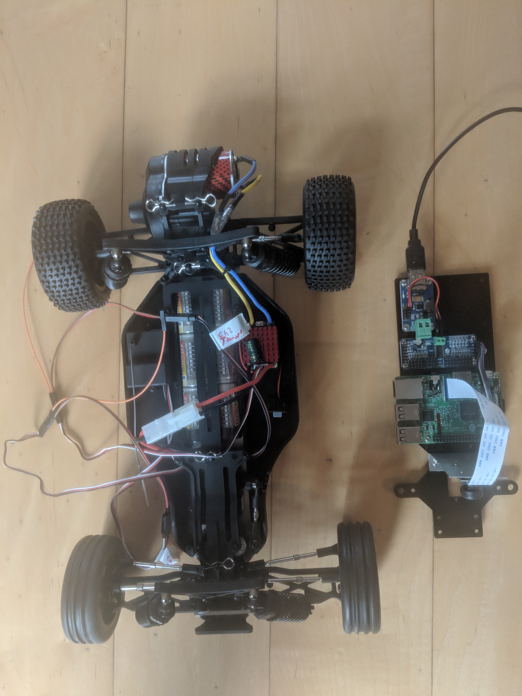

Chapter 7 Change to donkeycar
In December 2018 I switched from sunfounder to donkeycar Donkey Car
7.1 Reason for changing the plattform
The sunfounder was wonderful to learn the basics, PWM, I2C, use of camera with Pi, but had shortcomings in the steering mechanism. The steering angle was not reproducible, i.e. sending twice the same steering command did result in different steering angles of about a few degrees difference. Now since the aim of the game is to train a neural net which takes the commanded steering angle as ground truth this was a show stopper for me and therefore i moved to => Donkey Car
Second reason, other members of the group Esslinger Makerspace Projekt: Autonomen RoboCar bauen opted for donkey car.
I changed to Reely Dart 2.0 Brushed Tamiya-Buchse is the connector of the NiMH battery Charger is Voltcraft V-Charge Eco NiMh 3000

7.2 What to do
- disassemble the sunfounder, by taking of the plate on which the raspberry is mounted
- disassemble the L298N H-bridge, not needed if you use an ESC
- Rewire the PWM signal of the car
- channel 1 => steering
- channel 0 => throttle
- Install Software on Pi and Host Computer
- Setup Raspberry Pi
- Setup Mac Host PC (or windows or Linux host)
- Calibrate your car
- Drive your car
- Train an autopilot with Keras
Select web or physical controller Controller Parts
7.3 Rewiring the car
The rewiring consists of
- Disconnect the following connections
- PWM signal RC receiver => Steering Servo
- PWM signal RC receiver => ESC
- Connect
- Battery => DC/DC converter
- DC/DC converter => Raspberry Pi
- PWM Servo Hat onto Raspberry Pi
- PWM Servo Hat Ch 0 => ESC
- PWM Servo Hat Ch 1 => Steering Servo
- Raspberry Pi => Raspberry Pi camera
The resulting wiring diagram can be seen in figure 7.1
Figure 7.1: Wiring diagram after rewiring car
So there are only two PWM signal wires from the PWM Servo Hat to the car and the power supply needs to be connected to the DC/DC converter. A close-up on the PWM Servo Hat is given in fig 7.2
Figure 7.2: Close-up of PWM Servo Hat
7.3.1 Parts list
The following list is what I used to build the car, this does not mean there are better and/or cheaper options available. In total the cost is about 250€.
- Reely Dart 2.0 Brushed ca. 130€
- Raspberry Pi ca. 34€
- Raspbery Pi camera ca. 25€
- PWM Servo Hat ca. 32€
- DC/DC converter ca. 4€,
- WiiU controller ca. 18€
Tamiya Stecker Power wires ca. 9€
Stuff to mechanically integrate the new elements into the car.
7.3.2 Why not using PCA9685
Note, there seems to be an issue with driving two servos with PCA9685 at the same time. What happens is that steering and throttle work during calibration but not when the car is controlled via the web interface. TBC
A possible cure is described at Adafruit 16 Channel Servo Driver with Raspberry Pi.
When to add an optional Capacitor to the driver board We have a spot on the PCB for soldering in an electrolytic capacitor. Based on your usage, you may or may not need a capacitor. If you are driving a lot of servos from a power supply that dips a lot when the servos move, n * 100uF where n is the number of servos is a good place to start - eg 470uF or more for 5 servos. Since its so dependent on servo current draw, the torque on each motor, and what power supply, there is no “one magic capacitor value” we can suggest which is why we don’t include a capacitor in the kit.
I did not check whether this works.
The now used PWM SERVO HAT 2327 By ADAFRUIT INDUSTRIES did not show any problem controlling two channels at the same time
7.4 Folders created during installation of host PC
- /Users/uwesterr/mycar/models
- /Users/uwesterr/mycar/data
- /Users/uwesterr/mycar/logs
7.5 Calibrate the car
Instructions for the calibrations can be found at http://docs.donkeycar.com/guide/calibrate/#calibrate-your-car
ssh into your raspberry ### Steering Calibration run
donkey calibrate --channel <your_steering_channel>for PWM channel 1 for steering
donkey calibrate --channel 1(env) pi@donkeypi_uwe:~ $ donkey calibrate --channel 1
using donkey version: 2.5.8 ...
Enter a PWM setting to test(0-1500)360
Enter a PWM setting to test(0-1500)120
.
.
.Ctrl C to exit calibration mode
7.5.1 Throttle Calibration
run
donkey calibrate --channel <your_throttle_channel>for PWM channel 0 for throttle
(env) pi@donkeypi_uwe:~ $ donkey calibrate --channel 0
using donkey version: 2.5.8 ...
Enter a PWM setting to test(0-1500)400
Enter a PWM setting to test(0-1500)420
Enter a PWM setting to test(0-1500)400
Enter a PWM setting to test(0-1500)3807.5.2 Config.py after calibration
after configuration the config.py file reads
"""
CAR CONFIG
This file is read by your car application's manage.py script to change the car
performance.
EXMAPLE
-----------
import dk
cfg = dk.load_config(config_path='~/mycar/config.py')
print(cfg.CAMERA_RESOLUTION)
"""
import os
#PATHS
CAR_PATH = PACKAGE_PATH = os.path.dirname(os.path.realpath(__file__))
DATA_PATH = os.path.join(CAR_PATH, 'data')
MODELS_PATH = os.path.join(CAR_PATH, 'models')
#VEHICLE
DRIVE_LOOP_HZ = 20
MAX_LOOPS = 100000
#CAMERA
CAMERA_RESOLUTION = (120, 160) #(height, width)
CAMERA_FRAMERATE = DRIVE_LOOP_HZ
#STEERING
STEERING_CHANNEL = 1
STEERING_LEFT_PWM = 460
STEERING_RIGHT_PWM = 370
#THROTTLE
THROTTLE_CHANNEL = 0
THROTTLE_FORWARD_PWM = 550
THROTTLE_STOPPED_PWM = 410
THROTTLE_REVERSE_PWM = 320
#TRAINING
BATCH_SIZE = 128
TRAIN_TEST_SPLIT = 0.8
#JOYSTICK
USE_JOYSTICK_AS_DEFAULT = False
JOYSTICK_MAX_THROTTLE = 0.25
JOYSTICK_STEERING_SCALE = 1.0
AUTO_RECORD_ON_THROTTLE = True
TUB_PATH = os.path.join(CAR_PATH, 'tub') # if using a single tub7.6 Drive your car with web interface
Instructions are at http://docs.donkeycar.com/guide/get_driving/
7.6.1 Preparation on Mac
- open terminal
- Activate mappings to donkey Python setup with:
source activate donkey - Change to your local dir for managing donkey:
cd ~/mycar
7.6.2 Preparation on Raspberry
cd ~/mycar
python manage.py drivein the terminal window that looks like follows:
(env) pi@donkeypi_uwe:~/mycar $ python manage.py drive
using donkey version: 2.5.8 ...
/usr/lib/python3/dist-packages/h5py/__init__.py:34: FutureWarning: Conversion of the second argument of issubdtype from `float` to `np.floating` is deprecated. In future, it will be treated as `np.float64 == np.dtype(float).type`.
from ._conv import register_converters as _register_converters
loading config file: /home/pi/mycar/config.py
config loaded
PiCamera loaded.. .warming camera
Starting Donkey Server...
You can now go to http://127.0.0.1:8887 to drive your car.
/home/pi/env/lib/python3.5/site-packages/picamera/encoders.py:544: PiCameraResolutionRounded: frame size rounded up from 160x120 to 160x128
width, height, fwidth, fheight)))7.6.3 Open control in web browser on Mac
You can now control your car from a web browser at the URL: 192.168.178.67:8887
7.6.4 Setting WIFI up for the raspberry
To set up the WiFi connection on the raspberry you find a detailed description at SETTING WIFI UP VIA THE COMMAND LINE
7.7 Connecting bluetooth controller
I got an WiiU second hand WiiU controller, therefore I did select the Controllers page the WiiU controller
After ssh into the raspberry install Bluetooth Game Controller library
git clone https://github.com/autorope/donkeypart_bluetooth_game_controller.git
pip install -e ./donkeypart_bluetooth_game_controller7.7.1 Connect your bluetooth controller to the raspberry pi.
- Start the Bluetooth bash tool on your raspberry pi.
sudo bluetoothctl
power on
scan on- Turn on your controller in scan mode and look for your controllers name in the bluetoothctl scan results. This is done by turning over the controller and pushing the sync button until the 4 blue buttons blink
In the shell the scan showed > [NEW] Device 0C:FC:83:97:A6:4F Nintendo RVL-CNT-01
- Connect to your controller using its id (my controller id is
0C:FC:83:97:A6:4F) once you’ve found it’s id. You may have to run these commands several times.
pair 0C:FC:83:97:A6:4F
connect 0C:FC:83:97:A6:4F
trust 0C:FC:83:97:A6:4FNow your controller should show that your controller is connected - the 4 blinking lights turns to one solid light.
Run the part script to see if it works. You should see all the button values printed as you press them. Like this.
cd /donkeypart_bluetooth_game_controller/donkeypart_bluetooth_game_controller
(env) pi@donkeypi_uwe:~/donkeypart_bluetooth_game_controller/donkeypart_bluetooth_game_controller $ python part.py log
Please give a string that can identify the bluetooth device (ie. nintendo)nintendo
log
device /dev/input/event0, name "Nintendo Wii Remote Pro Controller", phys ""
button: LEFT_STICK_X, value:-0.009375
button: LEFT_STICK_X, value:-0.0015625
button: LEFT_STICK_X, value:-0.00390625
button: LEFT_STICK_X, value:-0.00546875
button: LEFT_STICK_X, value:-0.00703125How to adde the Bluetooth controller into manage.pyis described in section 8.1.3.3
In the file manageOrgExtWii.py the Bluetooth controller was integrated.
7.8 Start driving or training
Before start driving it might be a good idea to limit the max velocity, this can be done as described in 8.5
- Power up donkeycar
- Wait about 10s until Raspberry Pi is booted
- Switch on Bluetooth controller
- for Nintendo Wii controller
- the four blue LEDs flash a few times
- the left most LED solid shows that controller is connected with Raspberry Pi
Once controller is connected proceed as described in instructions
ssh pi@<your_pi_ip_address>
# or
ssh pi@donkeypi-uwe
cd ~/mycar
python manage.py drive
# or if you have changed the file name to indicate that you added the bluetooth contorller
python manageOrgExtWii.py drivehow to the the IP address of your car you check your at your router. How to do this at shackspace is described 6.4
And the car drives
add Bluetooth controller to manage.py https://github.com/autorope/donkey2_plus/blob/690ff1b78c49c2a3dd4c1095bfcac9673f150804/manage.py
The script manage.py can be called with several options, to find them type
(env) pi@donkeypi_uwe:~/mycar $ python manage.py drive --husing donkey version: 2.5.8 … /usr/lib/python3/dist-packages/h5py/init.py:34: FutureWarning: Conversion of the second argument of issubdtype from
floattonp.floatingis deprecated. In future, it will be treated asnp.float64 == np.dtype(float).type. from ._conv import register_converters as _register_converters Scripts to drive a donkey 2 car and train a model for it.
Usage:
manage.py (drive) [--model=<model>] [--js] [--chaos]
manage.py (train) [--tub=<tub1,tub2,..tubn>] (--model=<model>) [--base_model=<base_model>] [--no_cache]
Options:
-h --help Show this screen.
--tub TUBPATHS List of paths to tubs. Comma separated. Use quotes to use wildcards. ie "~/tubs/*"
--js Use physical joystick.
--chaos Add periodic random steering when manually driving7.8.1 HOW TO TETHER RASPBERRY PI TO ANDROID DEVICE HOTSPOT
http://onlineshouter.com/how-to-tether-raspberry-pi-to-android-device-hotspot/
7.9 Mange recorded data
The training data is being stored in the folder /mycar/tub.
Since there might be a lot of data after a while you might want to
- delete
- archive
- copy it from the Raspberry Pi to your computer
data
7.9.1 Archiving data
Archiving can be done by renaming the tub folder with the mv command. The mv command moves, or renames, files and directories on your file system. To move the tub folder, i.e rename it, to tubArchive use
mv tub tubArchivemore details on mv can be found at https://www.computerhope.com/unix/umv.htm
7.9.2 Delete data
Once you want to get rid of the data use the following command
rm -rf tubMore on rm can be found at https://www.computerhope.com/unix/urm.htm
7.9.3 Copy files from raspi to mac
copy file from pi to mac run in terminal
scp pi@192.168.178.67:mycar/manage.py
# or
rsync -r pi@192.168.178.67:~/mycar/data/ ~/mycar/data/then type the password of the pi, afterwards the the file mycar/manage.py is being copied to the current location. The current location can be found via the pwdcommand.
10-42-27-27:CloudProjectsUnderWork uwesterr$ pwd
/Users/uwesterr/CloudProjectsUnderWork